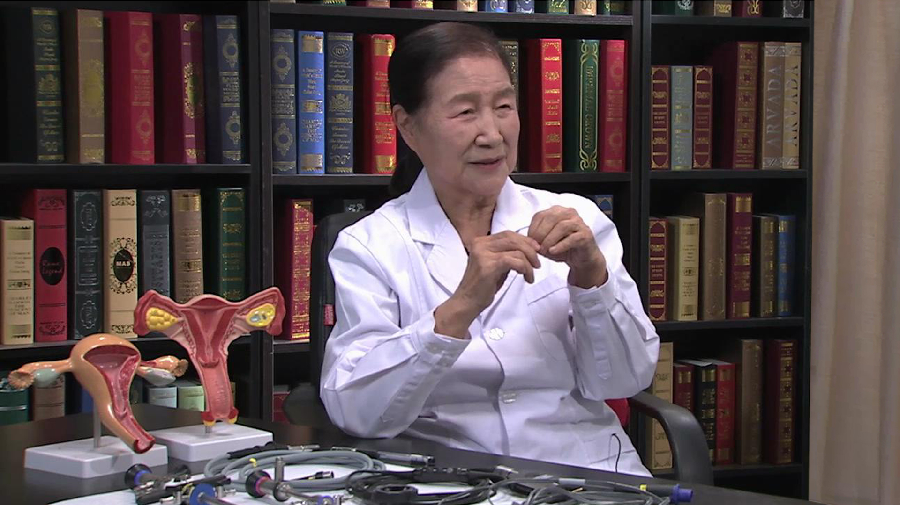

宫腔镜¶
夏恩兰 主任医师¶

首都医科大学附属复兴医院宫腔镜中心主任；
首都医科大学妇产科教授 硕士研究生导师；国家卫生部四级妇科内镜技术培训基地主任；国际宫腔镜培训中心亚洲分中心主任；亚太地区妇科内镜学会(APAGE)理事；《中国内镜杂志》编委。
主要兼职国际生殖与输卵管手术学会理事；国际妇产科学杂志副主编；Gynecological Endoscopy 编委；Gynecology and Minimally Invasive Therapy 编委。
主要成就及论文编著主持临床科研获各级科技进步奖30项，《宫腔镜的临床应用与基础研究》获2004年国家科技进步二等奖；发表论著249篇，主编妇科内镜参考书4部，主译五部。
专业特长作为妇产科资深专家和我国宫腔镜诊治医学的奠基人与开拓者，熟练掌握本专业常见病、多发病诊治新进展。宫腔镜和腹腔镜诊治技术极为娴熟，宫腔镜电切术达国际先进水平。畸形子宫矫形术和极简式腹腔镜宫颈环扎术享誉国内外。
什么是宫腔镜？¶
宫腔镜是一个光学的仪器，是现代最先进的一种微创的妇科诊治疾病的技术，这个技术的应用带来了妇产科医疗界，无论是在诊断还是在治疗上的一种认识上的和操作上的革命。
这个仪器前面有一个比较纤细的管道，它能够通过子宫颈进入子宫腔，再把光缆安上，通过强的光线把宫腔照亮，另外用膨宫介质把宫腔膨胀起来之后，再用适配器连到监视器上，于是我们就可以在监视器上看到宫腔里的图像。因为它是通过一个腔道进入宫腔，最后观察到宫腔所有的病变或者它的形态，那么我们叫它内窥镜，也叫内镜，它分两种，一种是诊断用的检查镜，还有一种是治疗用的手术镜。
宫腔镜还有很多配件包括它的光缆，要把宫腔照亮，用膨宫介质要把宫腔膨胀开，我们需要用适配器，把宫腔的图像传输到监视器上，也可以放到录像机里保存。如果做手术，我们还可以连接电缆，之后用单极或者双极对宫腔里的病变进行切除。宫腔镜是应用于临床的一种非常好的设备，非常好的一种治疗方式，在20世纪末期才发展得比较完善。
在没有宫腔镜以前，我们了解宫腔是用一根棍，前面有一个弯形中空的刮匙在里面刮一刮，看看宫腔里边到底有什么。如果进不去，那么我们用黑杆扩张器再进去，来探查宫腔有没有粘连，如果有病变，我们拿钳子进去夹或者是拿吸引器吸，所有的操作都是用一个头端不同，后边可能有负压的指感器械，但是我们看不到宫腔，谁也不知道我们所有的操作是不是非常准确，是不是达到你需要看的那些目的物，是不是把你所需要切除的组织都带出来了。
但是从上个世纪末，我们经过一百多年的前人的努力开发和使用了宫腔镜。现在我们能够一览无余的直接看到空腔，看到宫腔的形态、结构是否正常，不正常的话，到底里边是长了占位病变，还是内膜增生或是畸形。我们对宫腔镜的问世，给予很高很高的评价，因为过去我们是盲目的，不知道宫腔里面的情况，现在完全看清楚了，而且能够取出来去做病理组织学检查，所以宫腔镜它的问世是个里程碑式的进展。
宫腔镜是如何探查子宫的？¶
正常的子宫，首先它总的长度应该是7-8cm。第二，它的结构分为下面3cm的子宫颈，子宫颈内口上方是大概是4-5cm子宫体。从形态上讲，它是上宽下窄，也就是宫底是宽阔的，到子宫颈内口是狭窄的。子宫颈内口下方的宫颈是纺锤形的，就是宫颈管宽阔一点，到了外口又是紧缩在一起的形态。
正常的宫腔是一个和信封一样的，前后壁贴在一起的潜在腔，有月经的时候子宫内膜脱落，经血充盈宫腔，用B超看有个腔中间有点低回声，或者妊娠子宫胀大，或者里边长东西这个子宫就是膨起来的。正常情况下就是贴在一起的，你要把镜子放进去，光线也有了，但是子宫壁贴到镜子、镜面上我们什么也看不到，我们用电切镜一推，用这个电切环来切除病变。电切镜贴在上面看不到，根本不能操作，怎么办呢，我们把这个宫腔用一般是平均动脉压110mmHg的压力给它膨胀起来，这样把宫腔膨起来之后就形成了一个可视空间，这个液体它是清亮透明的，所以看得是非常清晰的，形成了一个我们手术的空间，你才可能完成操作，才可能看清楚这些病变。
这个检查除了形态之外，我们还可以看到子宫内膜是随着月经周期的变化，不同的时限，出现不同的内膜的改变，比如说月经刚结束，子宫内膜是薄薄的，淡黄色的，那么随着月经周期的改变，在早期子宫内膜增殖期，子宫内膜逐渐肥厚，由很薄变成正常情况下，达到5-6mm，或者是更多一些，它的颜色就更加粉红，它的厚度逐渐增加，子宫内膜的腺体也开始有分泌。
所以在宫腔镜下可以看到腺体的开口，看到这个子宫内膜像天鹅绒一样，月经周期的中期会排卵，排卵以后子宫内膜它就会由增殖期改变成分泌期，在分泌期它的子宫内膜的腺体分泌非常旺盛，而且它形成顶浆腺，往子宫表面上移行这些分泌物，导致子宫内膜的表面出现很多指环状的白色的印圈。
如果我们的镜子分辨率很高，还可以看到它的血管，血管在月经周期的第二十二三天时，也就是孕卵种植时的窗口期时，窗口期的子宫内膜的血管由原来的脉络状转变成为有了侧枝循环，互相融合形成指环状的，形成网络状的来增加局部的血流来迎接即将种植的孕卵。如果没有受孕，子宫内膜慢慢萎缩，到了月经期，它逐渐的从底部会有些出血，最后子宫内膜脱落。这是对宫腔来讲，随着月经周期时限的不同，我们看到不同的变化。
还有宫颈，它对卵巢的内分泌没有受体，不受卵巢影响，子宫颈和月经周期没有关系，可是子宫颈的问题就是它应该有很好的分泌在妊娠过程中，精子通过宫颈要有一个顶体反应，它是在宫颈里来进行的，通过宫腔镜检查我们能够了解整个宫腔是否正常，正常的话同时取出子宫内膜来进行化验，要是有异常可以定位活检，可以有针对性的把它取出来送去化验，它是非常准确的。现在我们用宫腔镜，只要宫腔镜的分辨率很高，操作正规，没有盲区，没有观察不到的部位，定位取材又很准确，这个诊断应该是百分之百的准确。
所以现在宫腔镜的检查是目前我们诊断宫腔内病变的金标准，但是它的前提就是宫腔镜的要有很好的分辨率，第二就是非常正规的的操作，不能够有遗漏。第三，病理组织学的检查取材要达到目的，当然病理科他会尽职尽责给你进行切片分析。
宫腔镜检查和其它妇科辅助检查相比有什么优点？¶
其它的就是辅助的一些方法，刚才讲到诊刮，它首先是盲目的，第二，操作是有风险的，诊刮用的这个器械，如果你操作非常正规是没有问题的，但是极个别的它会穿通子宫体，因为你不知道宫腔多长，我们用宫腔镜能看到宫底就不会往前走，用刮匙时，你是盲目的，是要靠感觉的，你没有感觉到有阻力，就会穿出去，这个子宫穿孔大概发病率是3%，子宫穿孔当时要发现了都能够救治，如果没发现，回去以后导致感染、粘连，甚至于过去有发生脓毒败血症，最后导致一些不好的后果。
那么第二就是传统的用了一百多年子宫输卵管碘油造影，现在应用还是很普遍，它有两个问题：
第一就是这造影剂，我们过去用的是碘油，它粘制性比较高，在宫腔里边能够停留较长的时间，但是碘油的量不是特别好控制，它是40%的碘油，一支是20ml，它非常黏滞，你往里边推注时，因为阻力大，稍不小心它就可能会有从这个接口的地方流出来，要是流出来一部分，20ml没有完全打进去，最后宫腔里边有充盈缺损，那拍出来的片子，你就认为这宫腔有粘连，实际上是造影剂流出来了，它的注入和你的技术操作，和你的力量、和你的造影剂的进去的量都相关，有的时候还会人为的把气泡打进去，你看见也是一个充盈缺损，所以它了解子宫的形态它不是很可靠。
第二就是，造影之后拍片子的聚焦问题，子宫如果是正正的摆着，你会看到这子宫上宽下窄的形态，如果是子宫是歪的，你看到子宫成了一个T形子宫，或者推的过程中偏到一边，所以你不会了解她真正的子宫的形态。这个子宫输卵管碘油造影，就是这样一个问题。
还有就是病人要暴露在X光下，这个X光的量是很少的，还有极个别的造影剂会栓塞在肺部，如果宫腔有粘连，造影剂排不出来，在里面有很多油珠，影响以后的治疗，这都是极个别的个例，大多数是没问题的，但是它主要的问题是一个间接的检查，我们看到的是一个影子，不是直观的，和金标准的宫腔镜检查是不可同日而语的，咱们讲“耳听为虚，眼见为实，”我们一眼就看清楚了这宫腔是个什么形态，子宫输卵管碘油造影是间接的，我们认为是不可行的。
第三个就是B超，B超了解宫腔它的优点是非侵入性的，不像宫腔镜检查，子宫输卵管碘油造影、刮宫都是侵入性的，病人要上手术台就有一定的损伤，而超声躺在一个平台上，我们用仪器可以给他重复扫描，但是它也是一个间接的，和扫描的技术、仪器设备相关的依赖性的技术，或者说是有赖医生的经验、水平、耐心，技术依赖性的一种检查，因为子宫上宽下窄，得用很多针一点一点扫过去，中间漏一针你就看不到了，仪器分辨率不高，当然现在这些仪器也都很好了，国产的也很好了，那和你使用还有关系，和保护你的探头有关系，比如说有的医院探头摔了，有一些线就断了，它扫出来那都有问题，所以它是个设备依赖性，又技术依赖性的仪器。所以这三种方法，和这个直接的金标准的宫腔镜检查是不能相提并论的，最可靠的方法还是宫腔镜检查。
当然现在还有一种软组织造影的磁共振，磁共振对子宫腔的病变的检查是比较好，几乎达到百分之百，但是我们的经验，在它诊断子宫畸形方面，达不到百分之百，另外就是它不能够同时取占位的病变，不能够像宫腔检查能分辨它是肌瘤，还是息肉，而且病变表面的血管，血管的改变，黏膜的改变一样，观察到这些占位病变，软组织造影只是黑白，是看不到的。所以最后的总结就是，初筛可以使用辅助检查，要明确诊断必须做宫腔镜检查和子宫内膜病理。
宫腔镜硬镜和软镜有什么区别？¶
今天给大家看的宫腔镜只是硬镜，它是硬质的，不是拐弯的，还有一种软镜，它的前端是可以弯曲的，他们各有优缺点。
硬镜它最大的优点，就是它的图像非常清晰，图像是最好的。那么在检查里，我们这种硬镜用的多，软镜用的少，为什么呢，因为软镜有一定的适应证：它有细的有粗的，细的2.1mm粗，对那些幼女，那些绝经妇女，宫颈外口已经缩得很窄了，我们不愿意给她扩宫，或者是扩宫有困难，为什么扩宫困难呢：幼女处女膜是完整的，要扩宫的话，要把宫颈夹出来，这样会损伤处女膜，对于绝经妇女来讲，她的穹隆已经展平了，宫颈已经萎缩了，夹不到宫颈，它能拐弯，这时候我们用软镜就比较好。
但是它的费用比较高，和硬镜相比，它生产成本高，又比较容易折断，容易损害，所以我们用的比较少，软镜和硬镜各有不同的适应证，不同的用途，但是成像硬镜更好一些，虽然软镜也能达到咱们的目的，但是我们做教学，愿意给大家看到最清晰的图片。
幼女可以做宫腔镜检查或手术吗？¶
幼女是八岁以下的孩子，8-12岁是少女，12-18岁是青春期。
幼女是我们经常用宫腔镜来进行检查或手术的一个人群。因为我们医院和儿童医院斜对门，他们有些女孩子，阴道有分泌物增多，分泌物有异味，或者说是有出血，甚至有疼痛，那这些孩子就会找儿童医院，儿童医院他们做B超，做肛诊，没有发现问题，有的B超能够发现一点点问题，需要用内镜，因为它是分泌物也好，出血也好，是从阴道里边流出来的，我们就需要用内窥镜，需要用宫腔镜来进行检查，用镜子她都需要麻醉，如果有麻醉，我们还是愿意用硬镜。
对新生儿来讲，有这样的文献报道，新生儿的处女膜有非常好的延伸性。我们这种6mm的治疗镜，放在里边可以不损伤处女膜，这个操作我们叫它阴道内镜，阴道内镜和宫腔镜检查的过程是一样的，所使用的镜子都是宫腔镜，我们要把宫腔膨胀起来，所使用的膨宫介质，也就是用在阴道里边，把阴道膨胀起来之后，我们就能够看到宫颈，看到宫颈之后，我们把硬镜或者软镜，直接放在宫颈的外口，然后向里边推进，进入宫颈管，宫颈管如果有病变就能看到，如果还需要检查，还可以进到里边。像用这种方法，最小的孩子做到七个月，因为她出血，那么最小的子宫B超测量1×1cm，那是用软镜做的，在这个时期，就刚才这个病例，硬镜是做不了的。
但是更多的我们做的硬镜，进入宫腔能够看到子宫内膜息肉，宫颈的息肉导致的出血，更多的病人是幼女，她阴道里边放了一些异物，有的是炎症，有的是肿瘤。
炎症的，咱们可以看到它会有乳头样增生，咱们取活检送去做化验，可以看到它不是肿瘤而是炎症，炎症的治疗比较容易，它不是全身的消炎，局部的用一些消毒的液体来进行灌注，很快就会好了。
第二种情况就是异物，异物有什么就取什么，我们取到过一团棉纱，取到过一团尼龙丝、取到过一团沙子、孩子把沙子塞到里面，沙子没法夹，我们就用大量的膨宫介质，在阴道里边冲洗就冲出来了，我们取出过笔帽，我们取出过火腿肠的上边拴的那个小铁丝，我们还取出来过螺丝，一段一段螺丝卡在这阴道侧壁上，崁顿在里边，都不知道是怎么进去的，这样一些异物取出来之后，她很快就会好了。
那么最麻烦的就是肿物，我们用阴道内镜取出来，帮助儿童医院诊断，尿路管乳头状瘤，我们有3D，有横纹肌肉瘤，有葡萄状肉瘤，有髓样瘤，有血管瘤，我们的宫腔镜用于阴道内镜，那么解决什么问题呢：首先是为儿童医院进行明确诊断，取病理就可以得到病理组织学的支持。第二，他们就去治疗，治疗以后，还有两个问题，需要我们帮助他们，第一就是她出血，我们来找到出血点，帮她止血。第二就是，她治疗的效果，她或是手术，或是放射治疗，究竟局部有改变没有，还有没有残留的癌症组织，有没有肿瘤组织，我们再用阴道内镜给她去进行诊断。
所以这个阴道内镜对幼女来讲，我们一定是要做麻醉的，太小的子宫我们要用软镜，如果是阴道，用硬镜就可以。
为什么说宫腔镜是诊断子宫内膜癌最好的方法？¶
子宫内膜的出血，它有可能是增生，也有可能是肿瘤，还有就是增生往肿瘤转化的这个过程，你要取活检，也是通过病理组织学检查来进行诊断，还有一种情况就是，这个宫腔它的容积是3-7ml，它这个部位是正常的，那么逐渐过度到是一个增生，再严重一点的简单的增生，复杂的增生、非典型增生、到中间最严重的部位它是子宫内膜腺癌。
用宫腔镜检查，你可以发现哪个部位最严重，哪个部位病变最明显，最明显的一个是组织糟碎？一个是表面的血管有异形，我们可以定位活检取这个部位，如果没有宫腔镜我们盲目诊刮，可能刮到也可能没刮到，你刮到了也可能刮的这肿瘤组织的边缘，刮出来的是子宫内膜增生而不是肿瘤，宫腔镜是诊断子宫内膜癌无可替代的最好的方法。
为什么子宫肌瘤用宫腔镜诊疗更好？¶
子宫肌瘤，现在新的分类分为九种，宫腔镜的诊断，我们可以看到宫腔里边的肌瘤，但是宫腔里边的肌瘤可能只看到一部分，它可能还有更多的瘤子在子宫肌壁里面，我们能不能通过宫腔镜把肌壁里面的肌瘤取出来，那就需要超声的帮助，叫做宫腔镜B超联合检查。
宫腔镜B超联合检查的优点就是，你看到宫腔的病变，更了解这个肌瘤的病变和子宫肌壁的关系，来判断这个肌瘤能不能从宫腔镜下取出。
为什么强调从宫腔镜下取出，我们从宫腔镜下取出打开的是肌瘤的表面背覆的黏膜和浅肌层，如果这个瘤子，比如说5cm，里边露出了20%，我们能够想办法用药，让子宫肌瘤缩小，最后从下面取出来。如果你不经过这过程，做开腹从外边把子宫切开，是很方便的能取出来，用腹腔镜切开取出来也可以，但是子宫壁，浆膜，它的外肌层，中肌层都有一个切口，这个切口大概99%都能愈合好，还有1%它的愈合有缺陷，这个缺陷形成的原因当然是多方面的，那对这一部分病人以后她再妊娠，有1%的概率会发生子宫破裂。
子宫肌瘤病人本来想保留子宫，想生育她才做这个手术，如果不想生育，也许她整个子宫就切除了，那么我们最好选择宫腔镜来做这种手术，保留她子宫的完整性，保留她以后子宫再次妊娠，极大程度的减少子宫破裂的机会。宫腔镜下做子宫肌瘤切除手术发生子宫破裂的极少，偶尔个例，算不出比例。
诊刮术治疗子宫内膜息肉会有什么问题？¶
子宫内膜息肉这个病太多了，不孕症的妇女，国外报道最高的比例是37%，绝经期出血的妇女25%，还有国家关心职工，每年定期做体检，没有任何症状，育龄妇女拿着报告来了，子宫内膜息肉我该不该做，该不该做现在是有争议的，但是对宫腔镜这种技术了解比较多，文献看的多的，我们认为只要它是真性的子宫内膜息肉，还是应该切除的。
什么是真性子宫内膜息肉，子宫内膜息肉又分三个类型，那就是来了月经以后，这个子宫内膜息肉不存在了，它能够随着月经脱落，它是来自功能层的，这个可以不做手术。除此而外，来自基底层的，或者是局部雌激素受体过多，真正是一种疾病的，息肉里面还有表面被覆的上皮是不典型的，还有腺瘤性息肉，这些都是应该切除的。
那么这个病，在一般不具备宫腔镜手术条件的地区或者是单位，它有个误区，他就愿意拿刮匙刮，刮出来以后，病理报告还是子宫内膜息肉，但是它里边还有息肉，什么原因呢，就是子宫内膜息肉有单发有多发，单发的就一个，是刮不出来的，因为这子宫内膜息肉，它有个蒂，有个瓣，你要刮的时候，你从左边刮，它往右边躲，你从右边刮，它从左边躲，所以单发你是刮不出来。多发的，那你瞎猫碰死耗子，这样是能刮出来，但更多是遗留在宫腔里边。有文献报道做了诊刮以后，你再放镜子再去看，22%子宫内膜息肉都还是存留在里边。
再说这个诊刮术，它只是把这个表面的上皮组织和这细胞组织切除了，它的根蒂没有切除，所以很容易复发，那么你要是电切，从根蒂局部进行彻底的切除，它也不容易复发。这子宫内膜息肉导致不孕，是非常重要的一个原因。
为什么说宫腔镜是治疗宫腔粘连唯一有效的方法？¶
宫腔粘连，用宫腔镜的优势是很大的，因为宫腔粘连的诊断，在没有宫腔镜以前，我们不叫诊断，叫臆断，臆想的印象诊断，为什么呢，我探针探不进去，那你是方向错了没探进去呢，还是说真正有粘连呢，没有人知道。
我们要治疗，那就是说过去传统的方法开刀，把腹壁打开，把子宫打开，看看里边粘连你切除，切除再缝上，越做越粘，所以没有好办法。在我是学生的时，老师讲宫腔粘连是臆断，你不要认为诊断就对了，治疗就不要谈治疗了，这个子宫已经石化了，就成了像桌子似的，就完全是融为一块了，宫腔不存在了，所以第一没法诊断，第二没法治疗，这是一个盲区。
有了宫腔镜以后，我们终于能够看到了，通过外口到宫颈管，再进内口，当然它真有粘连非常困难，我们会有技术上的一些方法，让镜子进到这子宫腔去，这里边又要谈到超声，超声引导，宫腔有一个轴线，我们沿着轴线走，如果不沿着轴线走，你就会造成假腔，走错了，走到腔壁里，走到肌壁间，再严重从肌壁出去了，就形成子宫穿孔了。那么利用宫腔镜，能够看到前方是什么，B超的引导，它这种子宫穿孔的可能性小，但是也不是绝对能够避免的，最后想法进到子宫底，进不到子宫底，那就是粘连了，你就需要治疗，需要进行切开，进行切除，那么我们希望能够进到宫底，能够看到两侧的输卵管开口和子宫角，看到正常的形态。
看到它如果有粘连，那它又分为是宫颈的粘连，是宫颈内口的粘连、子宫下段的粘连、子宫中段的粘连、子宫的上段粘连，上段粘连还有子宫一侧角的封闭，两侧角的封闭，都封闭了就是宫腔完全粘连，还有宫腔部分粘连等这么多类型，你根据你的情况，你的条件进行分期治疗，这宫腔粘连不是一次能治好的。
它为什么粘连呢，是由创伤造成的，多数94%，甚至96%的报道都是因为创伤，创伤就是我们做宫腔内的操作，做人工流产、做诊刮、甚至我们做造影，或者中期妊娠流产以后，我们用手进去取胎盘，产后取胎盘，都和我们的操作相关。但是剩下那4%-6%是感染，原发的感染比较少，最多见的还是结核性的感染，全身感染的一部分。
那么你要治疗，现在我们能够看清楚它病变在哪儿，我们可以进行分离，也可以进行切开，然后定期的要来第二次探查，看看它是否又粘连了，又粘连我们再次给它分割。这个治疗效果是有效的，恢复正常的子宫的解剖学形态可以达到99%，恢复她正常的生育功能，能够获得一个好孩子，轻度的粘连是80%多，中度的粘连60%，重度粘连30%，那可以看到，随着粘连的严重程度的增加，再次妊娠分娩的概率也在成一定梯度减少。所以我们提出来宫腔的粘连，一定要早期发现，早期治疗，怎么发现，还是离不开宫腔镜。
那么宫腔粘连再延伸一步，就是刚才讲到轻中重，它有很多分类的方法：首先说它粘连的这些组织，最轻的是膜样粘连，就像子宫内膜，正常子宫内膜来月经就脱落了，它这个膜样粘连不能脱落，为什么？它里边有很多子宫内膜的细胞，还有一些纤维组织，纤维组织它不脱落，所以需要治疗。第二种就是纤维组织的粘连。
第三种是肌肉组织的粘连。
第四种是结缔组织粘连，就是瘢痕了。瘢痕我们平时哪个部位受伤，最后形成一道疤，都知道这种瘢痕它是很顽固的，你不进行切除，它占据着子宫的一些重要的着床的部位，那她再妊娠是很困难的。
所以宫腔粘连它的诊断是金标准，在治疗方面也是唯一的有效的方法，也是金标准，而且和别的宫腔镜的手术比较的话，它还多一条就是，宫腔镜是治疗宫腔粘连的唯一的有效的方法，反过来说，你用别的方法都无效，你比如说子宫肌瘤，你用别的方法也能切，也能切掉，也能妊娠，但是你发生子宫破裂的几率增高，但是宫腔粘连，你切开再缝合，比原来粘得还要重，你就可以知道这宫腔镜，在治疗宫腔粘连方面，它的贡献是多么大。
宫腔镜取育龄妇女子宫内异物有什么优势？¶
宫内里边正常的应该是空旷的，只是来月经，妊娠分娩也应该都排出去，有的胎盘种植了，或者粘连了，没有能够及时排出来，那以后迁延日久，那最后就发现宫腔里边有占位病变，病人有症状了，那看到里边有胚物，这个胚物就是残留的胎盘。
还有讲我们是一个放宫内节育器避孕的一个大国，绝大多数都做得很好，但是这节育器到了老年以后，它是应该取出来的，老年以后，这个子宫萎缩了、变小了，当初她放的节育器是年轻的时候放的，比较大卡在里面的，我们叫崁顿，怎么取节育器呢，咱们要是开刀也能取出来，它有替代的方法，但是宫腔镜下取出，它是最微创的，因为它没有刀口，腹壁没有刀口，子宫也没有刀口，费用也要少的多，痛苦要少的多。
还有异物，就是我们放了节育器，也可能是子宫收缩导致宫内节育器很自然的外移进到腹腔，也有可能放的时候，位置上有点偏移，放在了腹腔，也有个别放在肠管上了，无奇不有，这个要取出，我们宫腔镜检查是第一步，你先看看宫腔里有没有，宫腔里没有，超声又能够看到有，或者X光照片子也有，那你就会想，这个宫内节育器是在外边，这是第一个诊断。
第二还有在膀胱里的，有一节在宫腔里，有一节在膀胱里，我们做宫腔镜的医生都会做膀胱镜，那就评估一下，到底是从宫腔里边取出来呢，还是从膀胱里边取出来呢，我们的习惯是愿意从宫腔镜下取，你要问泌尿科大夫，他们就愿意从膀胱里边取，当然这个节育器也看它的形状，它有个大头小头，总是从大头那边取，后取那小头。
还有什么异物？胎骨残留，咱们的中期妊娠引产，胎儿比较大，多数都排出得干净了，但是有一些片状骨，像肩胛骨，还有长骨，像大腿的骨头，它比较长不是特别好夹住，钳子夹，你要是颅骨好夹，别的都不好夹，有可能残留在宫腔里，当时它也不引起出血，因为它本身没有血运，但是经过一段时间，她再想怀孕，不孕症，再去做B超，宫腔里边有强光，强光点，强光带，宫腔镜看，就是里边有块骨头，这骨头我们在宫腔镜下取，还是非常容易的，不需要开腹也不需要切开子宫。
宫腔镜治疗子宫中隔有什么优势？¶
子宫中隔，因为它发生率比较高。子宫中隔不是百分之百的不孕不育，有一部分病人她是能够正常妊娠，能够怀孕、能够足月、能够生一个好的孩子，后来怎么发现呢，她得了别的病，出血了，再来检查她是一个畸形子宫，但是她生产过，这种例子确实有。所以我们对年轻妇女来讲，让她先试着怀孕，试孕如果不成功，或者说试孕以后发生流产，这时再来做手术，要对它进行切除。
没有宫腔镜以前，这个手术怎么做呢，要开腹，腹壁有一个大的切口，要切开子宫，切开子宫以后，把纵膈切除以后，再给子宫缝上，缝上以后，再把腹壁缝上，你想想它有几个问题：第一创伤大，腹壁有切口，子宫有切口，要出血。第二就是子宫有切口，你缝上以后，她的妊娠的时间就会往后推，因为子宫有切口，你需要子宫完全愈合，就像我们现在做的第一胎剖宫产，第二胎要两年以后，那这样的子宫你要等两年以后才能完全愈合，那么子宫也有切口，腹壁也有切口，开腹很容易发生腹腔的粘连。
宫腔里边切了有个创面，就是她子宫壁上的切口，创面的愈合时间比较长，所以咱们讲它的缺点，第一个是创伤大，第二，延长了她从开刀到妊娠之间的时间。第三，这个切口大，它的愈合不一定百分之百都那么好，妊娠以后有子宫破裂的可能，我们医院做了六七百例没有发生子宫破裂的，但是我在外面确实看到有子宫破裂的，因为她这个切口愈合不良，本来人家想生孩子，最后子宫破了，及时治疗缝上还可以，如果有更严重的后果，也有子宫切除的。
剖宫产后经期时间过长，如何用宫腔镜治疗？¶
现在剖宫产发生率比较多，一个孩子比较珍贵，最后形成一种剖宫产的并发症，就是剖宫产恢复月经以后，你的月经期迁延日久，正常的是五到七天就结束了，她可能是十天以上，十五天，有的人比十五天还要长，那就很烦恼了。
为什么一直出血呢？因为剖宫产在宫颈的部位，宫颈部位的剖宫产的切口是横的，最后愈合瘢痕挛缩，它会有一个凹陷，所以从这宫腔里边看它是一个凹陷，凹陷的周围的边缘是比较宽厚，那就形成了一个倒着的水池子一样，咱们说水池一般都是在下边，它是倒着的，周围的边缘像个帽子沿似的，像一个盘子的沿，是比较宽厚的，隆起的，经血排出的过程中流到这个部位，它不能够很顺畅的排出去，就在局部形成一个漩涡，形成一个涡流，那么周围这个隆起的部位，我们叫它活瓣，这个活瓣影响了经血的排出，所以它一直哩哩啦啦，它最后都要排出去，这一排就是十几天，她的症状就是月经的一些延长，这是最常见的症状。
第二个症状就是耻骨联合上的疼痛。第三个症状也可以导致不孕，那么最多见的是出血。
治疗的首选的方法是宫腔镜的活瓣的切除，我们叫它开渠手术。什么叫开渠手术，我们把这个活瓣切了，这一部分没有阻挡的活瓣了，这个血就可以平着流出去了，咱们渠是底下开渠，引水开渠，它现在倒着呢，那么这个手术对宫腔镜来讲是轻而易举的，因为没经宫腔，它发生不了什么并发症，当然技术操作也有些要求。
这个手术在欧洲妇科内镜学会上专门提出来，我们每年去那儿开会，首选的方法也可能不能治愈，为什么不能治愈？因为它这个创底可以使瘢痕挛缩，使结缔组织增生，血管再生，血管丰富，局部的炎症，子宫内膜异位症，有小微囊，这个微囊就要命了，这个微囊就是以后剖宫产瘢痕妊娠的基础，所以基底有问题，那是需要我们在做切除病原时也要处理基底，也可能处理不太彻底，也可能从起始的基底到膀胱之间的距离太近，咱们做宫腔镜有顾虑，那就需要腹腔镜或者是阴式手术来把这个切口扩开。
但是常规的宫腔镜是首选的方法，就是你先用这个方法解决不了，你再做一些复杂的方法，在宫颈上做这个宫腔镜的电切手术也是非常大的一个贡献。
什么是宫颈机能不全？宫腔镜是如何治疗的？¶
有一种不育症叫做宫颈机能不全，宫颈也是子宫的一部分，是一个狭窄的部位，有的人讲它有括约肌的功能，但是没得到很好的证实，宫颈正常情况下是闭合的，来月经能排出来，妊娠以后它也是闭合的，妊娠到足月，有了子宫收缩，宫颈逐渐变得子宫颈内口开张，那么胎儿就排出来了。
但是有一种疾病叫宫颈机能不全，多数是先天性的组织的薄弱，它的一些纤维蛋白的成分比较少，有很多机制，最终的临床表现就是到了妊娠中期就会没有疼痛、没有原因、没有感觉的，这个子宫颈口就开了，胎胞就出来露在外边了。妊娠中期是13-28周，这个时期孩子是活的，因为他不是胎儿畸形也不是胎盘附着的异常，不像那些流产孩子是不好的，她这个孩子是活的，生出来以后妈妈也能看到的是一个活孩子，但是眼看着他就要死去，为什么？他和母体的联系，营养的代谢中断了，母亲是非常伤心的，看到这样好的孩子，因为自己身体结构的异常导致这个生命就消失了。
过去这五十多年有了治疗方法是经过阴道给它拴个绳来把宫颈环扎住，让它不要打开，但是从阴道达不到内口，因为宫颈的内口是腹腔内的器官，从阴道这儿做，只能结扎子宫颈的某一段，但是它也有效，也有一定的成功率，好的能达到60%，但是剩下那40%她终生是不会有孩子的，她可以一次一次的怀孕，一次一次的流产的这样一种疾病。
我们在研究这宫腔疾病的过程中，发现了这样一种疾病之后的治疗，我们就是用宫腔镜的方法来进行环扎，这是另外一个专题取得了非常好的效果，我们的治疗效果达到96.4%，和那60%相比提高了将近三分之一，所以这宫腔镜对妇女来讲，所有的疾病诊治方面是一个里程碑式的变化，我们的医生也是在紧追着时代的变迁，技术的发展，用先进的技术为我们广大的妇女来诊治疾病。
为什么宫腔镜是检查不孕症的首选方法？¶
宫腔镜检查不孕症是一个常规的首选的检查，2003年国外的文献就报道了，在国外达成共识，宫腔镜是不孕症妇女的首选，首选是firstline，就是一线的检查，那么我们国内现在还没有形成。
国外为什么这样说，生孩子肯定要用子宫，子宫无可替代的，我们国内现在的法律是不允许代孕的，所以必须用你的子宫，你子宫必须正常，那你就要检查你子宫是不是正常，我们在检查子宫过程中，发现不孕症是有正常的也有不正常的，不正常的我们就能够看到：首先是子宫的发育不全，7-8cm是正常的，幼稚子宫小，它只有4-3cm，幼稚子宫是导致她不孕的一个原因。第二就是，她的子宫内膜有异常增生，异常增生不是子宫的问题是卵巢的问题，子宫是卵巢的靶器官，卵巢的内分泌异常，导致子宫发生着内膜的变化，那这个手术子宫内膜切除治疗异常子宫出血的首选的外科方法，就是你要先做子宫内膜切除的手术。
那么为什么做手术呢，一般首选还是内分泌治疗，药物治疗，药物治疗无效那最后只好做手术，否则你的子宫老出血最后导致贫血，看上去挺健康正常的一个人只不过脸色白一点，国外叫做无形的残疾人，实际残疾是她脑细胞因为氧气供应不足，脑组织对氧需求量很大，所以她反应很慢，计算能力、学习能力、工作能力都下降，什么都不如人家，但是你看上去是个健康人，就这样一种疾病状态咱们就需要手术治疗。
在没有宫腔镜手术以前，常规的子宫切除它的子宫功能有两点：第一就是排出月经，第二就是跟生育相关。过去就认为我顶多不来月经了，我不生孩子了，现在的研究认为子宫和内分泌还是相关的，为什么相关？这个卵巢它的血运，一部分血运来自子宫动脉，子宫动脉有卵巢支供应卵巢，一部分是从骨盆漏斗韧带这边来的，那我们子宫切除，这个血管要阻断，阻断以后卵巢就少了一支血管，所以有实验证明，子宫切除以后卵巢的发育卵泡会减少，它的内分泌会减少，但是身体能够逐渐代偿，但是她绝经年龄会提前，另外心理上的影响，没有子宫有的人心理上有障碍，所以子宫不是可有可无的一个器官，那么我们现在用子宫内膜把这粉色的这一部分切除，就等于卵巢功能异常，它的靶器官不存在了，它不会出血了，但是这种病例，她一般也就不能生孩子了，咱们做这种手术要跟她讲，完成家庭了以后，生不了孩子了再做这个。但是现在我们时间长了发现，可以做浅层切除，保留基底层，药物治疗之后也有个别能生孩子的。
子宫肌瘤对不孕症的影响是非常明显的，长在子宫腔里面的子宫肌瘤，长在子宫腔里面的子宫内膜息肉，它都干扰精子的运行，精子进不去，方向紊乱不能受精，即使受精了，侥幸到了输卵管的壶腹部，卵子排出来，在这个部位受精，因为这个部分会有碳酸酐酶有利于它们的结合，之后它要回到子宫腔去，子宫腔里边有瘤子，有息肉，阻碍它的着床，所以这是不孕症非常明显的原因。那么宫腔镜检查就能够发现，而且宫腔镜手术也能够给予切除，肌瘤的宫腔镜的手术，术后获得好孩子的概率60%，为什么不是100%或者更高一点，就是因为子宫肌瘤是多发性疾病，其它部位可能还有肌瘤。
子宫内膜息肉，国外文献报道宫腔镜术后80%一年以内就能够生育，说明子宫内膜息肉导致不孕是一个非常明显的原因。
再下来咱们讲宫腔粘连，宫腔粘连导致不孕是非常明显的，宫腔根本就不正常，孕卵也没有部位去着床，精子也没有办法运行进入输卵管，它导致不孕几乎是百分之九十多，在我们门诊不孕症是一个很大的病人人群，那么咱们宫腔镜能够诊断，也可以进行宫腔镜下的治疗。
下面是宫内异物，像有的病人不知道宫腔里边有异物，像有个病人她原来放了宫内节育器，以后要生孩子了，节育器取出来以后不孕。我们再看那边还有一个节育器，当时不知道放了俩，有什么异物咱们都可以取出来。
最后就子宫畸形，宫腔镜能够明确诊断子宫畸形，宫腔镜诊断子宫畸形比盲目诊刮，比子宫输卵管碘油造影、比B超甚至于比磁共振都要准确，咱们的手术完全是腔镜下做，不开腹，可以腹腔镜辅助，但是腹腔镜是打孔的手术，它也是属于微创，创伤小的手术，子宫没有切开，不会引起子宫破裂，术后两个月就可以怀孕，极大的缩短了手术和怀孕之间的这个间隔，所以这个手术现在认为也是金标准，可以说已经完全替代了过去咱们常规的开腹，开子宫，切除子宫畸形的那些方法。
成年妇女做宫腔镜检查需要麻醉吗？¶
就患者来讲，宫腔镜检查成年妇女在我们医院是不做麻醉的，国外的报道也是不做麻醉的，但是特殊情况可以做麻醉，就是病人是检查失败了或者是有什么特殊情况，或者宫腔有粘连的，宫腔镜根本进不去，或者极个别的病人精神太紧张不能合作，或者说非常复杂的畸形我们也要做麻醉，因为不做麻醉，她要合作，我们所使用的技术叫无创技术，就是医生的语言是最好的麻药，你跟她讲宫腔镜检查很快的，两分钟就能做完。
你看着屏幕，告诉她现在要给你夹宫颈，有一点点不舒服，她知道，之后我要探宫颈管，过宫颈内口告诉她有点感觉，她也能耐受，之后我们4.5mm的镜子对育龄妇女来讲，育龄妇女生理情况下，子宫颈内口是可以通过3-4mm，我们的硬镜仅仅是4.5mm，只差0.5mm，我们把膨宫介质开的大一点，它形成一个水柱，在前面把宫颈扩开，我们再稍微转一转就进去了，就告诉她进去了，进去以后让她看屏幕，这是你的子宫哪一段是正常的，哪一段是有病变的，她精神一转移，之后我们就取出来了，需要取病理，我们再跟她说，我们稍微用刮匙给你刮一下，就好像舌头舔了你哪个部位一下似的，说的过程中，这个操作也就结束了，那么是可以不用麻醉的。
但是我们这些操作都是用超声监护，超声能够引导我们尽快达到治疗的目的，到了宫底，我们能看到它有一个安全的因素就是不容易穿孔，宫腔粘连会引起穿孔，宫腔镜检查也会穿孔的。
宫腔镜最大的优势是什么？¶
它最大的优势就是微创，和传统的诊断和治疗来讲它是微创，创伤很小，因为它是通过人体的天然孔道进入宫腔，强光照亮了宫腔，膨宫介质把它膨胀起来，所有的病变能够直视的，一览无余观察到整个宫腔的状态。
过去我们想了解宫腔，你只好把子宫切开，子宫切开创伤就大多了，我们做手术通过宫腔镜，切除了宫内的占位病变，你所需要切除的组织，保留了子宫，比你打开子宫，打开腹腔来讲它的创伤是很小的。
第二个优点就是它是个无血的手术，咱们要开腹，要切开子宫，它肯定要出血，而我们用电，电设置的是bland，它是混凝同时存在的，在你切的过程中，它就会止血，不能说一点血没有，基本上你看不着血，那么它最大的优点清晰，病人损失小。
第三就是它保留了子宫，在过去我们子宫出血，肌瘤、息肉导致出血，导致贫血这样的症状，咱们没有更好的方法，最后子宫也切除了。这种切除是很多见的，在美国有一个报道就是中国在2004年，一共切除了248万子宫，这个子宫里40%是子宫肌瘤，其它的没有细分。大家再想想40%是肌瘤，我们知道子宫肌瘤有黏膜下的，壁间的、浆膜下的，引起出血肯定是黏膜下或者是壁间的，其中30%应该是宫腔镜能够做的，黏膜下的这些子宫是可以保留的，保留子宫对妇女来讲，她不只是保留了一个器官，甚至于可以保留她的生育功能，对她的心理甚至对她家庭的维护都是有很好的影响。
还有一个优点，就是可以和病人，和学生甚至远程的交流，可以共享，因为他有录像，你可以转述出去，在手术室可以告诉病人的病变在哪儿，在外边你可以设一个录像机，把图像转出去，让家属看你这个病变在哪儿，便于交流，便于签字，因为每种操作都会有知情同意的。甚至于远程会诊也是可以的，他那边做，给我们传过来，我们能够看到，可以对治疗诊断方面提出一些建议，这是它的优势，借助现在的互联网，优势能够更大的发挥出来。
做这种检查，还有一个优点就是它非常快速，整个过程，从进到出就是两分钟，然后病人上台下台，我们B超扫描一下盆腔的情况，最后打一个图文报告，这个过程需要二十分钟。如果你台子多的话，那就可以交叉进行，我们医院做得比较快，一天一个台子可以做到六十到七十台，因为我们是中心，大家操作非常熟练可以做得很多。
对医生来讲也非常喜欢青睐这种技术，因为他看得清楚，治疗有效，要掌握的话也比较简单，它的并发症又比较少，你要能够很好掌握这项技术，这些并发症都是可以严加预防，所以从医生这个角度来讲，也非常愿意做宫腔镜这种微创的手术，为解决那些有宫腔镜手术适应证的妇女的疾病。
宫腔镜检查可能出现哪些副反应？¶
宫腔镜检查，在宫腔里的操作别说放镜子，还放膨宫介质，还取内膜做病理，就单纯是放一个窥器，她也会不舒服，所以这种不舒服应该告诉病人，术后下腹部有一两天会有点微微的不舒服。
刚才讲的是宫腔镜检查的不舒服，那么还有就是会有少量出血，特别是做了子宫内膜活检，因为子宫内膜等于一个创伤，一个完整内膜你取出来一块，它是会有点出血，这个出血一定是在一周以内出现，而且它的量很少，绝不会超过或者等于月经量，如果是比这个情况更加严重，那就应该到医院来复查。
还有就是极个别的发生子宫穿孔，子宫穿孔应该当时就发现，特别要强调子宫穿孔发生率稍高一些，如果术中发现是没有任何后遗症的，咱们可以处理很好，用点缩宫素、抗生素，观察观察就可以了，禁忌的是当时没有发现子宫穿孔，那回去以后这个问题就严重了，所以我们在宫腔镜检查时，子宫穿孔一定要当时发现。怎么发现呢，首先你要有B超，你穿孔之后灌流液就会往腹腔里边流，腹腔里边灌流液聚集多了，应该就能看到子宫漂起来了。
宫腔镜手术操作可能会有哪些并发症？如何处理？¶
宫腔镜手术的并发症比较多，但是严加预防是可以避免的。
最常见的就是子宫穿孔，子宫穿孔在你操作时，B超监护或者腹腔镜监护能够预警，或者是穿孔了当时能够发现，你在下边做你底下也能够看着，那么我们做手术做的是宫腔镜，应该看的是宫腔最后看到腹腔里的肠管，大网，开玩笑了的说什么叫子宫穿孔，他说就是宫腔镜做成腹腔镜了，宫腔镜进入腹腔，看到腹腔了。子宫穿孔是最常见的，咱们还是特别强调要监护要预防，宫腔镜，B超监护能够看到它的强回声，距离浆膜比较近时就告诉他不能再切了，那么腹腔镜如果透光，光线很强，宫腔镜的光线腹腔镜看着了，也应该注意亮度，如果穿孔了腹腔镜能发现，可以缝合，不会有任何后果。
第二个常见的并发症就是出血，刚才讲应该是不出血的，但是你切深切到血管区，或者说你做子宫中隔，中隔隔板血管很少，如果你切的过度，切到子宫肌壁里面，肌壁里面有血窦它也会出血，就是你切割一定是切割过深了，切透了包膜，子宫肌瘤切透包膜了它出血，那么第一就是你的操作过程中，一定不要切得过分，怎么知道切得不过分，一个是你镜下观察，一个B超也可以提示，还有一种就是你穿孔了，穿孔穿在子宫角，子宫角部的血运非常丰富，或者是从子宫峡部穿出去了，旁边有非常丰富的血运，有子宫动脉还有两根静脉，它就很容易出血，这是可以预防的，当然发生出血咱们有很多救治的方法，一般也不应该出现太大问题。
第三个并发症就是灌流液，在做宫腔镜检查的时候，咱们要把宫腔膨起来叫膨宫介质，你要做手术膨宫介质让它流动，让它把宫腔里边过高的温度带出去，把宫腔里边的那些组织碎屑，脱落的内膜，我们切出来的组织全部都冲出去。第三就是它能冲洗，它的结构很巧妙，从上面往下流，下边是镜子，不断冲刷你的镜面，保持镜面的清晰手术才好做，但是这个膨宫介质你不能进得太多，宫腔压力不能太大，否则它会随着血管进入体循环，过多就会导致两种并发症，如果是单极低钠血症性脑病，因为咱们用的膨宫介质没有钠离子，第二种并发症就是心肺功能的衰竭，如果是单极咱们只用生理盐水，它一种并发症就是心肺功能的衰竭，
为了预防这种并发症，有一些常规第一就是你手术绝对不能超过一小时，宫腔镜的手术就是一小时，你做不完停下来，下回再做，继续做就有体液超负荷，英文名字叫TURP综合征的这种可能，但是我们发现不到一小时也有发生的，那就是这个手术应该时间尽量缩短。
怎么来缩短手术时间，首先你手术难度要降低，降低难度我们要做预处理，预处理首先我们要充分扩张宫颈，让你进出这些器械不耽误时间，第二就是你要切除肌瘤让肌瘤缩小，做四厘米大的肌瘤或做两厘米大的肌瘤，所耗费的时间是不同的，你可以用药让它缩小，第三就是让它出血减少，即使你切得过深，切到血管，也不要出那么多血，怎么办，也是要用药物作用于子宫，让它血管减少，这样来减少我们发生TURP综合征的概率。
第四个并发症就是感染，感染很少发生，一般都是她有基础病，过去有盆腔感染，那么咱们在手术前一定要做充分的消毒，阴道的细菌的菌群培养都检查清楚，有感染的因素就不要做手术。第二就是手术过程中，无菌观念要很好的执行，不要碰脏了还再继续做。第三就是术后要用抗生素，咱们手术中要给预防量，术后你觉得她过去有盆腔炎的历史，或者是有腹腔镜监护可以看到盆腔的一些粘连感染的迹象，要用抗生素。
最后一点就是静脉气体栓塞，非常少见的并发症。但是一旦发生她很危险，这气体哪儿进去的呢，就是我们往宫腔里边灌注那些液体，有气体进去了，有的是跟着灌流液进去的，有的是膨宫液，这个膨宫液的容器是空的，但是你的膨宫泵还不断的在工作就把气体打进去了，气体就顺着这个血液进入右心，从右心房进入右心室，进入肺动脉，在右心室收缩，收缩的这个血液是胶体，最后形成胶体液混上气体，成了泡沫血，泡沫血它的容量就变得很大，把进入肺动脉的出口堵住了，所以它的氧气不能交换，代谢废产物二氧化碳也不能清除，如果它的卵圆孔左右有分流，马上就进入动脉系统，进入动脉系统立刻就会发生猝死。因为三根冠脉血管被气体堵住没有了血运，大脑动脉没有血运被气体挡住会发生猝死，不死亡的也有，会导致永久性的神经功能的障碍，就是植物人，很少见但是确实是时有发生，所以我们做这个宫腔镜的手术，第一节课都是讲并发症，让你充分了解并发症，知道它的危险性，知道怎么预防再开始做。
这么多并发症，并不一定发生，它总的发生率还是很低的，在二十年前是12%，到了新世纪（21世纪）初是3%，严重并发症几乎是很罕见的，我的意思就是虽然有并发症，我们了解了，可以预防不让它发生，并不是说这种技术就不能用。
宫腔镜检查、手术需要扩宫吗？¶
扩宫是扩张宫颈管，更重要的是扩张内口，如果宫颈没有粘连，只是扩内口。因为内口好像括约肌一样，正常它是闭锁的，咱们不通过它进不了宫腔，宫腔的操作检查就没法完成，所以说扩宫是作用在宫颈端，而膨宫是把宫腔膨起来，跟宫颈没有关系，扩宫是宫颈，膨胀是膨胀在宫腔。
正常的宫腔是一个潜在的腔，什么叫潜在腔，就和信封一样前后壁是贴在一起的，有月经的时候子宫内膜脱落，经血充盈宫腔，用B超看有个腔，中间是有点低回声，或者妊娠子宫就胀大了，或者你里边长东西，这个子宫是膨起来，正常情况下就是贴在一起的，你要镜子进去，也有了光线，但是子宫壁贴到我们的镜子、镜面上，我们什么也看不着，我们这是电切镜，电切镜我们一推，用这个电切环来切除病变，贴在上面看不到，你根本不能操作，怎么办呢，我们把这个宫腔给它膨胀起来需要一般是平均动脉压110mmHg的压力，这样把宫腔膨起来之后就形成了一个可视空间，这个液体它是清亮透明的，所以看的是非常清晰的，形成了一个我们手术的空间，你才可能完成操作，才可能看清楚了这些病变，所以膨宫是膨宫腔，扩宫是扩张宫颈。
宫腔镜手术中的扩宫和膨宫是什么意思？¶
扩宫是扩张宫颈管，更重要的是扩张内口，如果宫颈没有粘连，咱们只是扩内口，因为内口好像括约肌一样，正常它是闭锁的，不通过它进不了宫腔，我们的宫腔的操作检查没法完成，所以说扩宫是作用在宫颈端。
我们要检查宫腔首先要通过宫颈，宫颈是个过道，你想进这屋子必须经过它，它有窄有宽，正常情况下育龄妇女她没有怀孕也没有病变，内口是最狭窄的部位，内口可以通过3-4mm宽度的检查镜，探棒、扩宫棒，那你就估计这个镜子能进去就不用扩宫，进不去就需要扩宫，我们一般用的硬镜4.5mm是能够进去的，如果是软镜，软镜有4.9mm的你就需要扩宫，软镜还有2.1mm的那你就不需要扩宫，硬镜我们还有更细的，也有2.1mm的，宫口太松了它还会往外流水，所以宫颈内口最好和你的镜子非常匹配，就是能进去能出来，膨宫也非常满意，这是育龄妇女。
如果你宫腔里边有病变，比如说有子宫内膜息肉，特别是比较大的，或者是子宫肌瘤，它的宫颈有一定的开张，子宫有一种生理功能就是宫腔里边有异物它会收缩、排异，会有一定的松弛，有一定开张，那这个情况你就到手术当时，根据情况来试一试，如果不足进不去你再扩张，我们是黑杆扩张棒它是逐号的，由4号一直到13号，每两号之间有一个半号，4号，4.5号，5号，5.5号这样逐项的扩张，这是手术当时决定，你术前预计这个病人宫颈，特别是宫腔粘连，你预计一定要扩宫，咱们要做预处理，预处理又分两种，一种是绝经期的妇女，她的宫颈一定是狭窄的，你要扩张先给她用两周雌激素，什么意思呢，就是用两周之后体内雌激素，它会导致宫颈的软化松弛，宫颈会形成粘液栓，粘液栓也是一个引导，也是更加润滑容易进去，但是这也不足，只能说是你需要扩宫的时候，它使你更容易扩宫，这是绝经妇女。幼女我们是不能扩宫的，需要手术再扩宫，那是另外一回事情。
那么对于这个不孕症的妇女，如果我们要做手术，宫腔里边有占位病变比如说粘连，它的宫内不会有一定的松弛，我们做预处理，预处理又有两种方法，一种是用药物，一种是机械性的来膨胀扩开宫颈。药物有间苯三酚，米索前列醇，局部使用就可以，它可以软化，可以有一定程度的扩张，但是你做手术时，还需要用硬质的黑杆扩张器来测试一下，达到你所要扩张的程度没有，那么器具方面是咱们国内山东用海藻制的宫颈扩张棒，它的特点就是刚做出来比较细，放到宫颈管里边之后它可以吸水膨胀，你放进去就是4mm，等它膨胀以后会达到9mm，我们的电切镜有最粗的9mm的，8.5mm、8mm、7mm的，咱讲的是要做手术了，你用这宫颈扩张棒来做预处理，基本上就能够满足你的要求。
预处理是很重要的，预处理做好了我们再用金属扩张棒去扩张，它就不会有撕裂，不会有损伤，如果预处理做得不够，或者是我们操作的技术方面，不能操之过急，要非常柔和的慢慢的来扩张，还要有超声的监护，你循着它的径线，循着宫腔的轴线走，因为子宫正常情况下前倾前屈，子宫它都往前歪一点，所以你进去的时候，前边宫颈这一段你要经过内口，要往上挑一下，但是有的病人是后倾后屈，没有B超你就看不到，你还按前倾前屈做，就从子宫前壁穿出去了，所以还有B超的监护。
更重要的要有这个意识，因为扩宫的时候我们在手术台上用的是硬质的金属，病人是软组织，硬的组织要进软组织里边去，找不到道的话很容易损伤，它有撕裂的，有穿孔的，所谓撕裂就是从组织间撕进去了，没有达到腹腔，没有穿透浆膜。穿孔就更严重了，直接就出去进入腹腔了，当然也不要紧，发现之后及时的处理还是可以的，最怕的是不发现，所以我们在进入宫腔以后你就能操作了，你的目的是检查或者是手术，最后你退镜子时一定要仔细看宫颈内口周围有没有损伤，有损伤，有出血你是要电凝的，这一步很重要不可忽视。
所以总结就是宫颈要做预处理，它是我们完成宫腔镜手术不可缺失的一部分，而且是非常重要的，否则你进不去什么也做不了，但是有撕裂的可能，尽管预处理也有撕裂的，你在退出镜子的时候要仔细检查子宫颈内口有没有撕裂，有撕裂，你就电凝，用宫缩剂，术后观察才可以避免发生更严重的后果。
做宫腔镜检查的最佳时机是月经干净后3-7天吗？¶
如果你有目的的要做宫腔镜检查，你一定在预约的前一周，不要有夫妻生活。
如果不是预约的，你今天来到医院，你的疾病需要做宫腔镜检查，没有禁忌证，只有适应证，我们就要给她做阴道分泌物的检查，一定没有细菌感染，也问她夫妻生活的情况，但是这都不是绝对的，只要阴道没有霉菌和其它少见的感染，没有霉菌性阴道炎，咱们都是可以做的，为什么呢？就是我们膨宫介质的量很大，在进入宫腔以前，大量的膨宫介质在阴道里面充分冲洗，充分冲洗之后如果有致病菌，这个病原菌的浓度也会稀释的非常低，是不会导致感染的。
检查后腹部会总有一些酸痛不适，没有太大影响，都是会有感觉的，有点出血也是正常的，也就这样两种不适，没有更多的不适。
（采访）患者宫腔镜检查后有什么需要注意的地方？
因为你子宫内膜取病理或者说我们做宫腔镜检查，对子宫内膜多少有点创伤，蹭了一下它会有点出血，那你等到来完月经，她子宫内膜完全修复了，这个创伤就不存在了，所以我们要求你月经来潮以前，不可以同房，这点是很重要的。
那么有的人就会问，我要不要用抗生素，要不要用消炎药，那就看你去做检查的这个医院的所有设备是怎么消毒的，在北京我们都是非常严格的遵照国家的规定，都是灭菌的，那另外一种消毒方法是抑菌的，它抑制细菌，抑制那就有程度上的不同，灭菌就是一点细菌都没有了，当然你操作应该注意无菌观念，如果是抑菌的消毒，可能医院会给你一些预防性抗生素。
那么我们现在宫腔镜检查方面，国外是不用抗生素的，我们国内原来是常规用抗生素的，后来咱们的国家抗生素受到WHO（世界卫生组织）的一些警告，现在我们的要求就是有三种情况用抗生素，其它的基本上不用，第一种就是她出血超过了三天，因为子宫它和阴道、外阴是相通的器官，三天出血怕逆行感染，所以就给三天抗生素来进行预防。第二种情况就是有盆腔感染的病史。第三种情况，就是我们检查怀疑有感染，但是病人出血很严重，我们迫切的需要了解她宫腔的情况，也可以做宫腔镜检查，但是只有这三种情况给抗生素，其它的检查的医生根据情况，也可以使用。
检查以后月经来潮以前可以淋浴，盆浴、游泳、夫妻生活是不可以的，那么来月经的过程是子宫内膜脱落，同时新生的子宫内膜增生，月经干净以后，新的上皮完全是完整的，这时可以有夫妻生活。
检查以后取病理很重要，有的医院很负责任，发现有异常就会给她打电话，这个异常仅限于它是恶性的，要良性的比如说不孕症，月经周期是后半期，应该是分泌期子宫内膜，你报告是一个增殖期子宫内膜，说明你不排卵，我们的护士不会通知你，因为你没有生命危险，但是如果你拿不到这个结果，宫腔镜检查几乎是白做了，只是做了一半大体的诊断，宫腔镜检查这种手术，它的诊断分两部分，第一部分就是镜下诊断，镜下诊断看你的结构，当时就告诉你，宫腔里边有没有占位，子宫内膜有没有异常增生，是不是特别肥厚，还有一个就是病理组织学检查，它是宫腔镜检查的不可分割的二分之一，一定要把病理报告拿到手。
（采访）宫腔镜检查之后，患者子宫多久可以恢复正常，多久可以准备怀孕？
来一次月经子宫内膜就修复了，修复的是完整的子宫内膜，它没有创伤，这时候你就可以有夫妻生活，有夫妻生活就有妊娠的可能，也就是说你做了宫腔镜的检查，手术是另外一回事，宫腔镜检查以后，来一次月经你就可以过正常人的生活。
宫腔镜检查前后需要注意哪些事？¶
除了出血和不孕症有具体要求之外，其它的情况，只要没有月经都是可以做的，但是过去在参考书上，在民间的传说，在网上常常都写在月经干净以后3-7天，我们现在通过检查认为这不是最佳选择。
比如说她是出血来的，这个出血不是偶然出血，比如这病情迁延了一段时间，这个血一定是从阴道里排出来的，阴道出血很少见，宫颈出血也比较少见，大量出血一般都是来自宫腔，如果病人求治，甚至于贫血，一般都是宫腔出血，那这个检查的时间就是，你要诊断是有出血而不是月经，就是出血的时候检查，这么说吧，就是对于出血的病人来讲随时可以检查，没有禁忌症，只有适应症，它就是适应症，不禁忌。
对于那些不孕症的妇女来讲，看你的目的是什么，你是想知道子宫的结构是否正常呢，还是想知道它有没有排卵呢，还是想知道它的孕卵着床的窗口期，子宫内膜的容受性，分这三种情况那你选择的时间又是不同。
比如说你想知道这个子宫正常不正常，只是看一个解剖学的形态，那你就月经刚干净，刚干净里边没有肥厚的内膜，你容易膨宫、容易观察。
如果是想看有没有排卵，有排卵她子宫内膜是分泌期改变，我们要取子宫内膜做化验，我们要看看子宫内膜它的厚薄，它的腺体的开口的表现，这时候我们在月经周期的后半期，排卵以后，当然它也可能没有排卵，总之咱们安排是在月经周期后半期，后半期有一条，就是一定要除外她或者是没有同房不可能妊娠，或者说是她没有不同房的这种表述，我们给她做个妊娠实验或者给她交代清楚，你想了解这个，万一你怀孕了，也可能有点影响，但是我们的经验没有影响，很个别的不能作为常规，也就是想了解有没有排卵，那你月经周期后半期取出来，看你有没有分泌期的改变。
最后就是我们看窗口期，子宫内膜的容受性，孕卵着床窗口期，是月经周期的22、23天，她的血管应该是有吻合支，她的腺体的开口，应该是白色的指环状的，这个需要很好的分辨率的镜子，一般的镜子如果用的时间过长，或者本身分辨率就不高，有可能看不到。
除了这两种情况，一个出血，一个不孕症，那就是剩下其它的都是月经干净以后做，没有什么特殊要求，唯一要求就是不能有月经，你是正常月经，月经期咱们是不做的，其它时间都可以。
依据就是，我们现在全球宫腔镜专家比较少，现在有一个专家叫奥萨马，他是埃及的专家，他做了大量的宫腔镜检查，他在日本讲学，我非常欣赏他，请他到我们的国家来，在我们的会议上讲过两次，就讲月经干净之后，马上做宫腔镜检查，可以发现一些问题，这些问题是什么呢？
首先是子宫腺肌病，子宫腺肌病，早期发现是宫腔镜，而不是腹腔镜或者开腹，这个疾病现在很多，最后导致要根治，就是要子宫切除，或者是影响不孕，经历了漫长的时间，又要先取卵，再打GnRHa再辅助生殖，很复杂，实际它早期病变，子宫腺肌病是在位的子宫内膜，就是宫腔里面的内膜长到子宫肌壁里面去了，你想想它从宫腔往肌壁里边长，最早的表现就在宫腔里，它不是外边长进来的，所以早期表现在宫腔里，什么时候能看着呢，子宫内膜增生以后看不到了。
你月经刚过你就可以看到三种病变，一种就是说腺体的开口在子宫腔的表面能够看到腺体开口，因为子宫内膜它有腺体，有间质，它侵入子宫肌壁腺体开口留在原位，能看到，我们有很好的录像，腺体开口它被堵塞以后，这个子宫内膜异位到子宫肌壁里边，它对甾体类激素有反应，它会来月经，但是它的出口被堵，所以在局部聚集成了一个蓝色的点子，叫做蓝痣，有的就会成一个积血腔，只要月经刚过，没有子宫内膜被覆看的很清楚。
第三点就是，它主要的第一步侵及的是子宫肌层的内肌层，也叫做连接带，连接带是紧连着子宫内膜的基底层的，磁共振是能够早期发现，那么这个连接带它就会延伸、增厚、牵拉、扩张，这个过程非常微小的血管会撕裂，撕裂之后一些血细胞就会流出来，所以在局部有些血侵能够看到淤斑，子宫内膜长出来以后看不到了，你没有子宫内膜的时候看的一清二楚的。
这三个特点，镜下就可以诊断子宫腺肌病，你早期干预，早期治疗，不至于到最后子宫切除，不至于到最后生孩子要经过那么多周折，还不一定能够治愈，这是很好的一个发现，用奥萨马的话来证明，在没有月经的时候都是可以做的，咱们原来讲的不是月经干净还三到七天吗，月经刚干净就可以做。
第二个依据，我们的临床经验，你想月经是五到七天干净，短一点，咱们就讲五天，你干净以后你再加一个长的，加七天，五加七多少了，十二天了，十二天子宫内膜已经很厚了，你那基底层的什么病变也看不到了，你要很厚的子宫内膜你要取下来一块，送去做组织学检查它也容易出血，再说病人已经到了医院了，挂号挺不容易的，来了以后你还让她回去，再到月经干净，再等三到七天，又是下一个周期了，也很不方便病人，所以我们是不执行这个所谓的民间的常规，但是这个影响很深，病人常常来了就问，问的还是好的，有的不知道也就误以为是这样的时间，影响了她的就诊。
什么情况下不能做宫腔镜检查？¶
绝对禁忌症就是你肯定不能做，你什么情况下都不能做，没有绝对禁忌症，只有相对禁忌症，什么叫相对禁忌症，有的人解释这不叫禁忌症，叫检查后的注意事项，你有预警，你有后续措施，你就可以做这个检查，你没有后续措施你收不了这摊，你后边不知怎么办，那你就不要做这宫腔镜检查，宫腔镜检查的绝对禁忌症没有。
相对禁忌症里边有什么，病人发生子宫穿孔，他没诊断清楚，他把上级大夫找来了，上级大夫如果很有经验可以给你做，比如说她有血液病，我要给她检查宫腔有占位没有，你必须检查血液病或者你们医院有血液科，或者你即刻止血，或者事先给了她什么药物，让她不会发生大出血，当然更不能发生子宫穿孔，子宫穿孔止不住血这不惹事了，你得有后续措施，想得周到一些，比如说你有结核病，可能你做了宫腔镜检查，你的结核病播散了，本来不生孩子，你给搞得全身粟粒性结核也不行，你事先要给她用一些抗痨药，术后也要给抗痨药，就是这样一些情况。还有有一些盆腔感染的，这也不是绝对的，你要有抗生素保驾，你需要检查也是可以的。
宫腔检查的适应症，说简单点，凡是你需要了解子宫腔的情况的，都是宫腔镜检查的适应症，就是我想知道宫腔是怎么回事都可以，细分呢，子宫出血，异常子宫出血，就是不是月经以外的出血，包括月经过多，月经过少，月经周期的变化，淋漓不尽，持续不断，或者间隔时间又很长都是，就是和月经周期规律不符合的都可以做宫腔镜检查，这是最主要的适应证，大概占到宫腔镜检查的60%，有的医院普通妇科占到80%，
第二个适应证就是不孕症，不孕症前面我讲了，首选的常规检查，它占到多少呢，占到看你这医院是做什么的，你如果是辅助生殖中心，那你可以是百分之百，但是我们国内做不到，那么这一部分也是很重要的，因为只要是不孕妇女都是应该做宫腔镜检查的。
第三个适应证就是异常声像图学检查所见，异常的声像图就是间接检查、辅助检查，辅助检查发现异常，但是你不能诊断，你比如宫腔，我看见一个团块，看到异常回声，你只能提示有异常的回声，你不知道她什么病，送去做宫腔镜检查，比如说造影有充盈缺损，到底是气泡，是我们造影剂，造影剂有碘油，现在用的泛影葡胺都是液体的，流得很快，还是你没抓住拍片子的时间呢，你得做宫腔检查，看看你那个异常回声没有充盈的，到底是什么病。还有比如说咱们还有很多其它的检查方法，CT断层扫描，磁共振，还有彩色超声多普勒发现的异常都可以，最后都应该用宫腔镜检查来明确诊断。
第四个适应证，就是我们现在雌激素替代，对于老年妇女来讲还是一个比较常用的，国内少一些占1%，国外就比较普遍，用雌激素替代，她的子宫内膜对它有反应了，它会有一些增生，有一些变化，这个增生可以是一个单纯增生，可以是复杂增生，甚至于是不是又长息肉了，还是比较常见的。
如果这样一些病人，那么咱们是用宫腔镜来给她常规筛查，常规筛查没有症状，我们给你看看宫腔有没有异常，因为早期的一些改变，其它方法查不出来，B超使用最普遍，文献报道有经验的医生，1cm以下的病变他还会漏掉，没有经验的医生2cm以下的病变，他也会漏掉，这是一部分。
还有就是咱们乳腺癌在肿瘤里边，现在认为是全球妇女的第一杀手，乳腺癌它的治疗，根治性手术当然是很重要，术后还要用五年的化学治疗，这五年使用的药物，过去用过很多年叫他莫昔芬，他莫昔芬它对乳腺来讲它是抗雌，但是对子宫来讲，它有弱雌激素的作用，为了治疗要用它，但是子宫内膜可能有反应，反应轻的就是增生，再严重一点长息肉，再严重就是子宫内膜癌，那咱们就要事先来筛查她的高危因素，使用过程中对子宫内膜的改变，要及时检查，及时切除，及时病检，不要长了一个癌还没治好呢，这边再长一个癌，这都是宫腔镜检查的适应症。
四个适应证是最重要的，其它的就简单了，你比如说取环取不出来了，那你宫腔镜你可以，这是里边有异物，你可以看看里边到底有什么，有的是环，有的胚物残留，有胎骨，还有就是异常的分泌物，分泌物一般有三种来源，一个是你直接看到的阴道的分泌物，一个是宫颈的分泌物，最后就是子宫的分泌物，子宫也是有分泌的，她长期大量的分泌物，又不来自阴道，那到底是宫颈还是子宫呢，你也可以做宫腔镜检查，我们见到过宫颈里边有高分化的腺癌，那它就是分泌物，它不出血，最后我们看到宫颈病变很明显，取活检最后就得到明确诊断了。
还有适应证，就是跟子宫相关的手术都应该作为适应证，为什么呢，你把子宫切了，切开以后里边是个胚物残留，它因为出血你就把子宫出血，胚物残留你宫腔镜可以切出来的，这个子宫不一定要切除的，更严重的我们都遇到过，那时候没有宫腔镜子宫切除了，切除之后是个子宫内膜癌，它位置很低，做刮匙，刮宫的时候，愿意往这宫底刮，老怕漏了，它刮宫底刮最远的部位，宫角怕遗漏，到了宫颈内口那儿，不认真刮了，最后子宫切除，在这个部位就有内膜癌，这很狼狈的。
宫腔镜手术前后需要禁食水多长时间？¶
根据麻醉的要求，现在的发展像英国，像我们的主任在香港都已经非常宽泛了，就是术前两个小时禁食禁饮，不要喝水，术后两个小时就给她喝水促进她的肠蠕动，让她恢复，但是这个观念是非常新的，它来自丹麦的有个很有名的学者叫托本，他是一个消化系统的医生，他和麻醉科、护理部合作研究，就是减少病人禁食的时间，缩短禁食的时间，前边是不让进食，术后缩短她吃饭进入时间，这两个都是“进”字，但是内容完全不同。
这里面涉及到什么呢，首先涉及到胃肠科，胃肠科他们认为你不让她吃饭时间长了，她这个胃肠的功能就肯定是紊乱，术后又不让她吃，这个病人她的电解质都会发生紊乱，脱水，酸中毒都会发生。是因为你胃肠道空虚的时间太长了，所以胃肠科的医生他们发起这样的研究，涉及麻醉师多少年来术前六个小时，你再跟她说好话，术前四小时不能进食，不许喝水，有的时候病人喝一口水也不行，有的病人术前六个小时吃鸡蛋了也不行，麻醉师对病人负责任，你如果做了麻醉她误吸了，胃肠是饱满的，她膈肌一收缩吐出来了，咽喉也没反射咽下去了，咽到气管里边是要致死的，所以麻醉科有这样的顾虑。
那么术后病人是会吐的，你要呕吐，她也愿意她不呕吐，这一段反应期过去之后，术后六小时才可以吃饭，前后十二小时，更有甚的就是我们宫腔镜中心的病人，因为我们的病人太多，一天我们最多做到38台手术，那头天晚上我们建议她进流食，第二天早晨不让吃饭，这病人就是对自己要求很高，你让我头天晚上不吃饭，我头天中午就不吃了，再一个病人你中午不吃，我头天早晨就不吃了，还有的病人前天晚上她就不吃了，你说她禁食时间太长了，手术38台我们是四个手术室做，那总得有晚上五六点才做的，我们就告诉你是下午做的，早上不吃饭，结果中午也不吃，到晚上也不吃，最后病人有的就低血糖休克了，有的病人估计血钙也低了就抽搐了，有的病人晕厥了，后来我们就发现禁食的时间太长，这中间还洗肠，洗肠很多体液也跟着排出去。
我们发现这些问题了就提出要改进，改进我们得有依据，就像刚才讲的丹麦的托本，我们就跟他认识了，派了我们的麻醉师去跟他学习，麻醉的基础就是现代的麻醉药物有很大的改进，他们用这个药物这些恶心呕吐这种副反应的机会都很少，所以术前两小时不吃饭不喝水就可以了，术后两小时就是病人清醒了让她主动的让她喝水，让她吃饭，什么好处呢，就是促进她的胃肠蠕动，这种病人不脱水，没有酸中毒，体力也是很好的，那么做了手术一小时就下地，正常人一样不用占病床了，就是来了做了手术就走了，就可以达到这样一个效果，但是我说的这些，在国内还没有推广，国内常规的术前至少四小时禁食禁饮，宫腔镜手术倒是不洗肠，但是长期便秘的，有便秘史的，咱们还是要洗肠的，那么术后现在还是老常规术后六小时禁食，但是我们在改，改得不彻底，最先进的方法就是前后都是两小时。
宫腔镜手术的操作过程是怎样的？¶
宫腔镜手术和宫腔镜检查一样，你要不要扩宫进去，进去之后我们环视四周，再一次明确术前的诊断是正确的，然后我们要用电刀切除你的目的物。
目的物是什么呢，你要切除息肉就是息肉，要切除肌瘤就是肌瘤，要系统的切除子宫内膜，防止她以后再出血、贫血，或者你要分割，或者切除粘连，或者你要取出异物，或者你要对这子宫畸形矫形。我们所使用的这个器具就是电切镜，目镜放适配器之后它就会把这个图像传到这个监视器上，我们抬起头来看监视器，之后把强光源放进去照亮宫腔镜，这个电刀我们是这样子，这是双极，咱们还有单极，这样就通电了，这个电缆线和前面的环形电极，通电这儿连上它就光亮了，从这儿我们进了液体，宫腔就膨起来了，图像就展现在我们的监视器上，我们看着监视器伸出去到达我们要切除的目的物的远端，手松回来，靠它回弹的力量就切除了我们的目的物，就是一刀一刀的切，组织就切出来了，切除之后拿去做病理，就是这样一个操作过程。它是个微创手术，看起来很精细，也不出血，比开刀好多了。
宫腔镜手术是怎样麻醉的？¶
麻醉是有多种方法，也是根据病人情况来选择的，咱们从小的往大的说：
可以不麻醉，给镇静剂就可以，现在这方面国外进展很快，去年16年我到欧洲去参加他们会议，我看到他两个大的改变，第一个大的改变就是，不麻醉给镇静剂能够做一些手术，，我们曾经有过这样的例子，病人大出血，给麻醉也有适应症、禁忌症的，我们急着做手术，那边麻醉还没准备好，我们这边就做完了，那是一个心脏瓣膜置换术后的病人，因为她长期使用抗凝剂出血很凶，这么复杂的一个基础病的病人，麻醉科当然很慎重，但是底下汹涌出血，我们进去就做了这手术了，没给麻醉也做了，那个病人危重，她可能意识也有点模糊，可以不给麻醉，那么他们国外进展就是给点镇静剂就能够耐受，因为子宫它是副交感神经，不是交感神经，也没有什么知觉神经，她是不疼的，但是病人会有感觉，不是疼痛，有触觉，没有痛觉，是可以的，但是病人一般也不太愿意接受，我们也怕病人待会儿忍受不了了，我们这电刀在里边，她一动就会穿孔，所以一般都会有麻醉，除非特殊情况。
最轻的麻醉就是黏膜表面涂抹麻醉，我们用利多卡因蘸棉签上，放到宫颈内口，因为它的神经丛在子宫颈内口，内口敏感，把这个部位麻醉了我们就可以做宫腔镜检查，这是指的检查，宫腔镜手术是不行的。
那么再往上走一级就是局部麻醉，局部麻醉就是我们用利多卡因给它稀释十倍以后，在子宫颈和穹隆交界的部位，四点和八点这两个部位来注射，注射可以用于那些精神紧张的宫腔镜检查，或者是精神不紧张的宫腔镜手术，手术时间很短，我确认有的肌瘤是脱出的，就在宫口那儿堵着，这个操作很简单，这样局部麻醉也不用找麻醉师了，挺简单。
再往上就是局域性麻醉，和刚才讲的局部麻醉是有区别的，局部麻醉是黏膜表面涂抹，局域性麻醉就是做腰椎穿刺，把麻醉剂打到蛛网膜下腔，注射以后她的下肢是完全麻醉的，就从这个手术往下，一般平面胸10都可以麻醉的，就非常松弛，做宫腔镜手术就是很好的麻醉了。
再往上就是硬膜外麻醉，还是局域性的麻醉，把这个导管放在硬膜外，比这个蛛网膜下腔要浅，中间隔着一层，在硬脑膜的外面，它的麻醉效果也是很好的，它的副反应少，为什么副反应少呢，蛛网膜下腔麻醉术后往往有头疼，颅压下降，硬膜外麻醉不会有的。
再往上就是全身麻醉，全身麻醉又分两种，一种是静脉全麻，就是你静脉里边注射药，丙泊酚很常用的，芬太尼，打上以后，一般就是她就入睡了，病人是不能交流了，但是她是不疼的。
那么最后就是是做大手术的了，就是静脉麻醉，静脉复合气管插管麻醉，气管插管咱们会给她一些全身麻醉的药物，通过这个呼吸道吸进去。
那这些麻醉对我们宫腔镜手术来讲，现在用的最多的是静脉全身麻醉，它的局部的组织松弛的差一些，但是止痛是完全可以的，另外它比较安全，我们现在有喉罩，没有喉罩的时候是气管插管，现在有喉罩呼吸道很通畅，我们的手术时间很短，时间很短麻醉就没有那么多复杂操作了，特别复杂的手术，我们就要求她气管插管了，告诉她这个手术我们要两三个小时，两三个小时是非常复杂的矫形，我们还有腹腔镜得手术步骤很多，当然也是宫腔镜为主的手术。
护理宫腔镜术后的患者需要注意哪些事？¶
一是她们生活上的护理，首先要告诉她术后多长时间不能够吃饭，不能喝水。
第二就是她的体位，全身麻醉没有什么太严格的要求，如果是局域性麻醉，头不能抬高，一定要平卧，否则头疼，我们说我们现在常用的，术后让她还是常规告诉她六小时内是不用枕枕头，实际是可以枕枕头，要我去了都给病人枕上枕头，因为全身麻醉，她跟体位没有太大关系。
下边就是术后有尿管的，咱们要定期把尿给她排放干净，还要看看有的尿管插是插了，它那个锁扣没有打开，它有一个锁扣，锁扣夹住了那尿不往外流，你要让它引流，你得打开，你打开回来以后没有尿怎么回事，太多了也不行，太多了也不能让它逆流，另外如果不流，膀胱是不是膨胀，有的病人回来，从手术室出来，经过很长的一个通道，回到病房，你做了阴道的宫腔的手术，它多少有些分泌物，即使是药水，我们用碘伏它都有棕色的一些颜色，避免它往外滴滴答答的流，我们都要塞个纱布，这个纱布定时要取出来，护士要看看下边有没有，有的病人咱们宫腔里边放的球囊，我们更要观察了，看球囊，放了球囊有的人不舒服、疼痛，咱们就要告诉医生，是不是球囊里面液体打得太多了，有的球囊是放了掉出来了，脱出来了，这个事情都要注意观察。
术后一般主要就是术后的六个小时后病人都可以下地了，宫腔镜手术可以下地的，腹腔镜另外一回事，那么会阴部护理，我们除非会阴有伤口，一般就没有特殊护理了，腹部没切口她可以洗澡。
（采访）宫腔镜手术后患者回到家，自己需要注意哪些事？
首先是月经还没有恢复以前不能够有夫妻生活，不能盆浴、不能游泳，另外就是你要关注你的病理组织学的报告一定要取回来，看看到底是什么事情。
第三就是一定要按医生的医嘱定期复查，特别是不孕症的病人一定要复查，来寻求你真正的不孕的原因，另外宫腔粘连的病人，复查是治疗的重要的一步，因为宫腔粘连很容易复发，不来检查，再次粘连发生，再次做手术会比原来手术难度还要大，对你的治疗效果有很大的影响。
宫腔镜手术可以根治宫颈息肉吗？¶
宫颈息肉是非常常见的疾病，传统的方法是用血管钳夹住外露的子宫内膜息肉，一拉它就脱离了，因为它的蒂是很细的，它本身属于炎症不是肿瘤，但是问题就是咱们把外露这一部分取出来了，它的根蒂在宫颈管里边看不到也取不到，所以它很容易复发。
实际上有文献报道，6%的子宫颈的息肉是来源于子宫腔，也就是它实际上是子宫内膜息肉，只要做病理才能够发现，不做病理就忽略掉了。
25%的宫颈息肉同时合并有子宫内膜息肉，所以说对那些久治不愈的，或者反复发作的宫颈息肉需要做宫腔镜检查，如果除子宫内膜息肉外，宫颈息肉也是需要用宫腔镜来进行切除，它可以从根蒂部进行切除达到根治的目的。
当然了宫颈息肉是一个炎症性的疾病，这个息肉切除了其它息肉还可能再生，再生再切。子宫内膜息肉它本身是属于肿瘤，和宫颈息肉是不同的，也有这样误诊的，当子宫颈息肉摘除，最后七年以后发现病人是子宫内膜息肉恶变发展到Ⅲ期了，这就是当初没有能够用宫腔镜来进行诊断和切除的一个严重后果，当然是个例很少见。
宫颈糜烂在什么情况下需要用宫腔镜治疗？¶
宫颈糜烂是常见的一种生理现象，现在我们大家都知道它不属于疾病，而是在雌激素水平比较高的时间出现柱状上皮外移的一种现象。如果有以下两种情况需要治疗，此外都不需要治疗。
这两种情况，第一就是她的宫颈细胞脱落细胞的检查发现有CIN，有宫颈上皮内瘤样变，1级或者一部分2级是需要治疗的，3级累腺都需要治疗，脱落细胞有异常需要做病理组织学检查，病理组织学检查证实有CIN累腺都是需要治疗的。
其中组织学检查CIN1可以用宫腔镜来进行切除，再送病理；CIN2如果你很有把握，能够把你看到的需要切除的这个范围，完整的进行切除也是可以的，这是需要技巧的；其它的那就是做冷锥切，就不是宫腔镜的手术。但是冷锥切是非常容易出血的一种疾病，我们可以用宫腔镜来止血，这个手术对于传统的操作方式是要包埋缝合的，操作起来也是非常困难时间很长，那用宫腔镜来电凝止血是非常好的，因为宫腔镜的灌流液把表面上的血液完全冲洗干净之后能够看到出血点，点对点的止血是非常有效的，这是一种需要治疗的。
第二种需要治疗的就是涂片、细胞都没问题，但是病人有症状，所谓的症状就是同房出血或者说是长期持续的黏液脓性的白带，那就是宫颈腺的分泌亢进，也是需要治疗的，可以用宫腔镜的方法来进行切除。
宫腔镜是如何治疗剖宫产瘢痕憩室的？¶
剖宫产瘢痕憩室，我们知道现在大量的剖宫产都是子宫下段横切口，剖宫产的切口是在子宫峡部。子宫峡部是在子宫体和子宫颈之间，在未妊娠时期有一个1cm的部位叫做子宫峡部，到临产以后它逐渐的扩张形成10cm长的产道。
我们做剖宫产希望孩子从腹部生出来，那么这个切口就在子宫峡部上，等到子宫缩复以后这个部位在子宫颈内口下方形成一个凹陷，瘢痕挛缩以后这个组织紧缩形成一个凹陷，这个凹陷在子宫颈管里边，这个凹陷周围的隆起是比较明显的，就好像一个盘子周围有一个高起来的沿，经血排到这个部位，它受这个凹陷的影响在里边旋转，回旋，但是排不出去，最后导致的后果就是月经周期的变化，其中就是月经的持续时间延长，正常是五到七天，这种情况可以十天，十天以上，十五天甚至有更长的，原因就是这个瘢痕憩室导致的经血不能够通畅的排出，现在学术界认为宫腔镜手术是首选的方法，也就是把这个凹陷周边隆起的叫做活瓣的部位进行切除，使它的凹陷和宫颈外口比较平直，那么这个经血就能够顺畅的排出，她的月经就能够如期的停止，这是首选的方法。
咱们讲首选的方法，基本上我们做的缓解症状是百分之百的，但是也有不治愈，不治愈就是除了缓解症状她还有别的症状，比如说耻骨联合上方疼痛，不孕症，或者说是起始的基底距离浆膜过近，那没有把握不敢做这种手术，基底要破坏的，她做不了也可以选择其它方法，但是这个宫腔镜手术是首选的。
哪些情况下不能做宫腔镜电切术？¶
宫腔镜手术首先说如果宫颈口，宫颈管不能充分扩张的，进不去宫腔里边就不能操作，所以宫颈管不能充分扩张就是禁忌症之一，当然我们可以想办法让它扩张，但是真扩张不了，还是做不了的。
第二就是我们宫腔镜的镜体的长度，大家可以看到长度它是有限的，做电切术是有限的，有一段是在阴道里边，一段进入宫腔，所以宫腔过长超过12cm，宫底部的病变是抵不到的，你要想办法让它这子宫缩短，子宫体缩小，然后再用它做手术。
还有子宫肌瘤太大，做起来也可能能做，但是费时过长，你比如说肌瘤达到5cm，咱们做一小时完全做起来有困难，手术超过一小时膨宫介质又会引起一些并发症，所以太大的肌瘤，咱们也是不做的。
最后就是咱们能切除的都是良性病变，一般有恶性，比如说子宫肉瘤，或子宫内膜癌，子宫内膜癌早期，现在有尝试性的来保守治疗进行切除，都是局灶的，没有深层浸润的，一般说恶性病是不治的，也是禁忌症。
为什么宫腔镜术中要使用膨宫介质？对人体有副作用吗？¶
正常的宫腔是一个潜在的腔，就和信封一样前后壁是贴在一起的，有月经的时候子宫内膜脱落，经血充盈宫腔，用B超看有个腔中间是有点低回声，或者妊娠子宫胀大了，或者你里边长东西这个子宫是膨起来，正常情况下是贴在一起的，你要镜子进去了,你光线也有了，但是这子宫壁贴到我们的镜子、镜面上，我们什么也看不着，我们这是电切镜，电切镜我们一推，用这个电切环来切除病变，贴在上面看不到你根本不能操作，怎么办呢，我们把这个宫腔给它膨胀起来，当然需要一定的压力，这个压力一般是平均动脉压110mmHg，这样子把宫腔膨起来，膨起来之后就形成了一个可视空间，这个液体它是清亮透明的，所以看的是非常清晰的，形成了一个空间，也是我们的手术的空间，你才可能完成操作，才可能看清楚了这些病变，所以膨宫是膨宫腔。
膨宫介质用于宫腔镜检查术和宫腔镜电切术，它的选择是不一样的。对于宫腔镜检查术来讲，膨宫介质只要清澈透明就可以，比如最方便的那就是生理盐水，容易（获）得又没有副反应，但是往往我们做了宫腔镜检查接着就做手术，那就要选择既适合宫腔镜检查术，又适合宫腔镜电切术的灌流液。
那就讲第二个问题宫腔镜电切术，电切术咱们现在的能源是高频电，它这个设备分两种，一种是单极电切术，一种是等离子双极电切，单极电切它不能够用带有离子的膨宫介质，做手术时膨宫介质就叫灌流液，所以我们使用的是5%的葡萄糖，比它好一点的是5%的甘露醇，它有利尿的作用，还有就是3%的山梨醇我们国内没有，所以我们国内最常用的还是5%的葡萄糖，它的缺点就是没有离子，灌流液回吸收过去，血清的渗透压就会下降，血清的钠离子就会降低，血清钠离子降低就会有一些低钠血症的症状，这个症状主要是脑病的症状，病人昏昏欲睡，那么这个就很严重了，引起中枢神经的一些并发症。
还有一个并发症，那就是灌流液吸收过多，心肺功能有障碍、代偿功能不好的会发生呼吸衰竭或者是左心衰竭这些并发症，当然咱们有预防的方法，但是要理解，要预防，那么双极电切镜它的并发症要少，因为它可以用生理盐水灌流，所以它没有低钠血症性脑病的并发症，但是依然可以发生心肺功能衰竭的症状，这也是应该加以预防的。
膨宫介质有三个作用：
第一是降温的作用，我们知道单极电切它的刀头的温度很高，可以达到两千度，但是我们要把过高的温度导出去，就靠灌流液循环给它带出去，在我们的电切环的刀头叫电极头的部位，是集中它的电能来进行切割。
第二个作用，它的设计这灌流液是在这个镜子的上方往下冲，它可以清洗这镜子的液面。
第三个作用就是它会把这宫腔里边，咱们切除的组织碎屑，一些黏液，一些血渣都带出去，使得我们的视野非常清晰，这样才便于我们完成手术。但是它也有问题，它会发生TURP综合征，灌流液过度吸收就会导致肺水肿，肺水肿的病人如果不能及时治疗，接下来就是急性左心衰竭。一般我们和麻醉师都有很好的沟通，我们做这个手术以前对并发症应该有一个细致的了解，发生是很少的，怎么来做呢，我们膨宫压力要降到最低，但是不能牺牲我们的视野的清晰，在保持视野清晰的前提下，应尽量用最低的灌流液的压力，第二就是限制手术时间，第三就是麻醉师的密切配合，他看到病人有什么异常，咱们及时手术停止，这宫腔镜手术有意思，你停止不做了出不了问题，你要硬强着往下做真出问题。